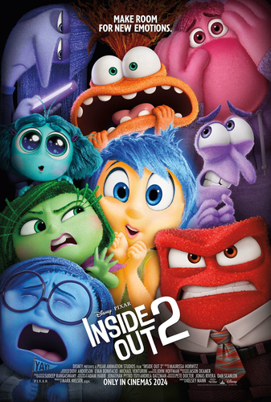

Divertidamente 2 marca a sequência da famosa história de Riley (Kaitlyn Dias). Com um salto temporal, a garota agora se encontra mais velha, com 13 anos de idade, passando pela tão temida pré-adolescência. Junto com o amadurecimento, a sala de controle mental da jovem também está passando por uma demolição para dar lugar a algo totalmente inesperado: novas emoções. As já conhecidas, Alegria (Amy Poehler), Tristeza (Phyllis Smith), Raiva (Lewis Black), Medo (Tony Hale) e Nojinho (Liza Lapira), que desde quando Riley é bebê, eles predominam a central de controle da garota em uma operação bem-sucedida, tendo algumas falhas no percurso como foi apresentado no primeiro filme. As antigas emoções não têm certeza de como se sentir e com agir quando novos inquilinos chegam ao local, sendo um deles a tão temida Ansiedade (Maya Hawke). Inveja (Ayo Edebiri), Tédio (Adèle Exarchopoulos) e Vergonha (Paul Walter Hauser) integrarão juntos com a Ansiedade na mente de Riley, assim como a Nostalgia (June Squibb) que aparecerá também.
Eu estava com certo medo, como sempre fico com continuações. Mas, mais uma vez, o filme acerta em cheio. É muito preciso ao retratar as emoções e mostrar como elas se relacionam com situações que vivemos na vida real, quase como um estudo psicológico. Se o primeiro filme nos emociona e mostra por que a tristeza é importante para que a alegria tenha seu valor, este nos ensina que não podemos simplesmente ignorar as coisas ruins que fazem parte da construção do nosso caráter. Afinal, somos uma soma de tudo o que vivemos, sentimos e fazemos, tanto das coisas boas quanto das ruins.
| Filme | Gênero | Nota |
|---|---|---|
| Divertida Mente 2 | Animação | 4.5/5 |